Cinematic & Street
Cinematic photography, street scenes and visual storytelling, graded for a vintage film feel.
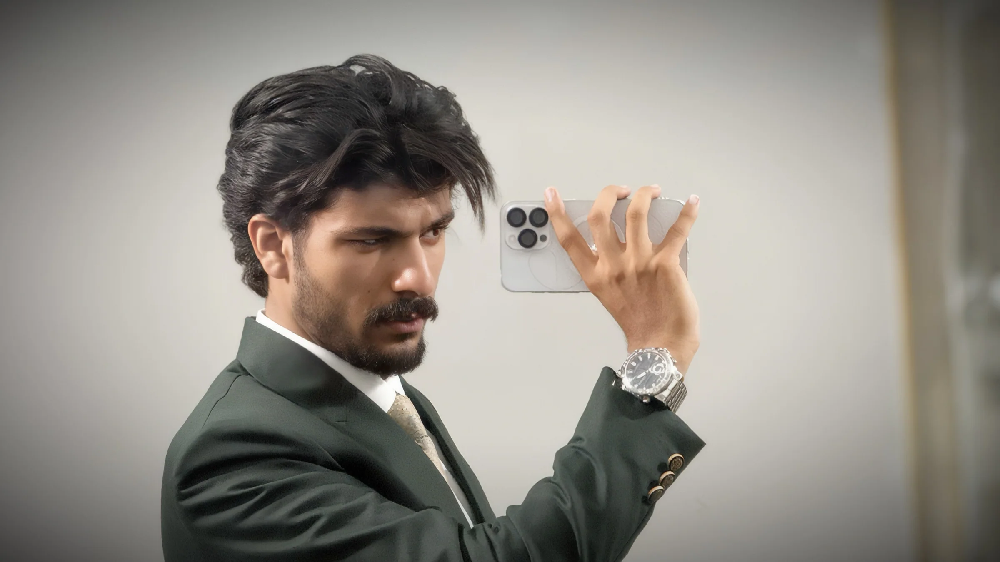
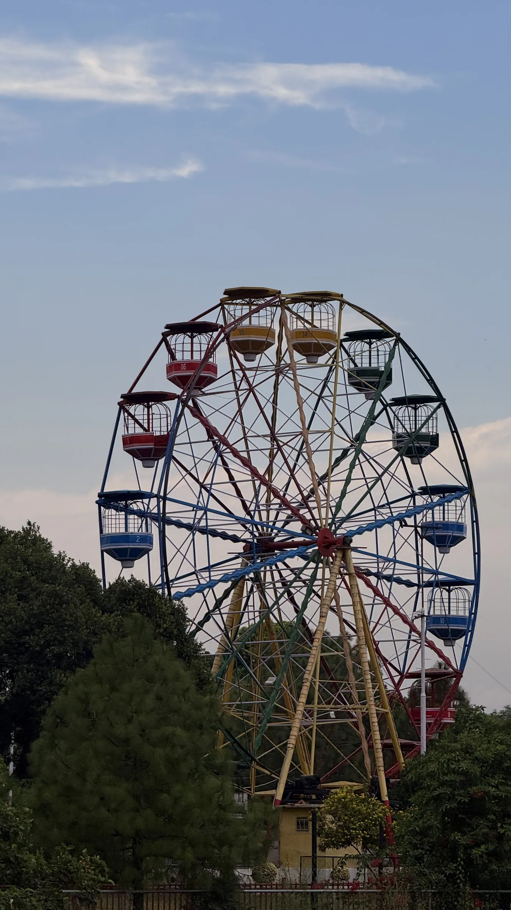
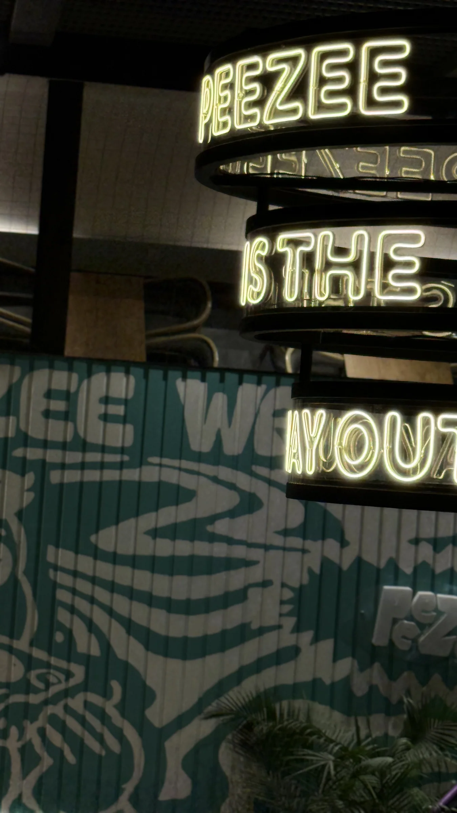
Cinematic photography, street scenes and visual storytelling, graded for a vintage film feel.
Fashion campaigns and clothing visuals for fabric and boutique brands, directed from concept to final edit.
Perfume, jewelry and accessories photography with luxury presentation and premium branding visuals.
Photography, videography and editing for Instagram and Facebook business accounts: reels, promos and brand stories.
Fast, responsive websites with HTML5, CSS3, JavaScript and GSAP animation.
Founded and now run Old Lens Photography, specializing in cinematic photography, fashion shoots, street photography, brand campaigns and visual storytelling. Leading creative direction, editing and brand identity development.
Collaborated with one of Pakistan's well-known boutique and fashion brands on professional perfume and product photography, focused on luxury presentation and premium branding visuals.
Worked with a recognized Pakistani fashion and fabric collection brand as a senior photographer, creating fashion campaigns, clothing visuals and commercial content for brand promotion.
Lead photographer and creative head for a jewelry and accessories brand, directing premium product shoots, luxury branding visuals, promotional campaigns and social media content.
Managing photography, videography, editing and visual content, specializing in engaging reels, promotional campaigns and brand storytelling for online platforms.
Started working professionally as a serious photographer, gaining experience in event, street and portrait photography, and media coverage.
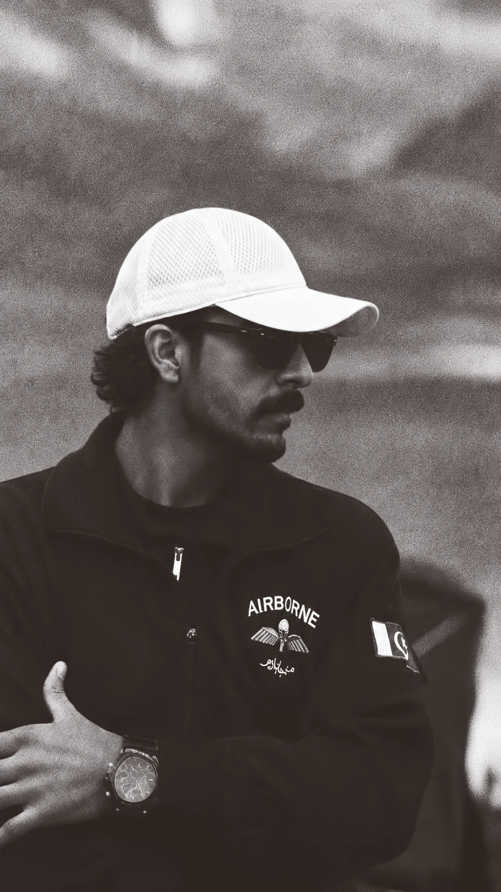
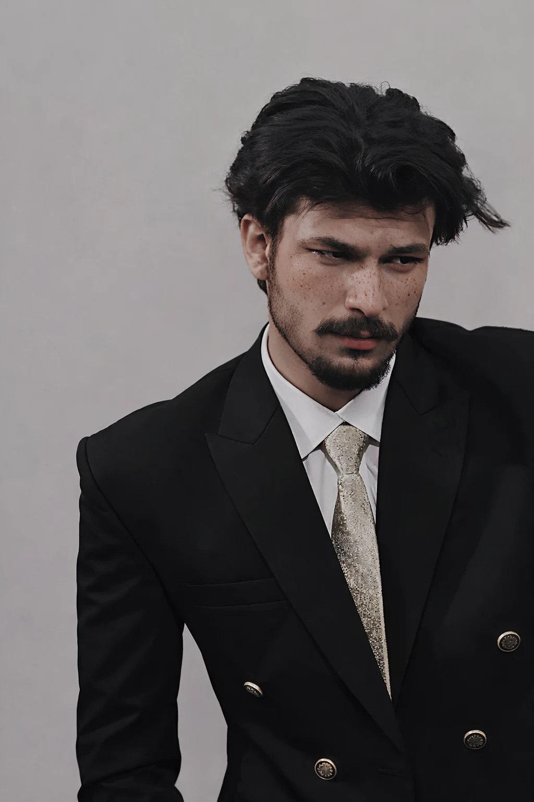
I am Muhammad Ansar, founder and creative director of Old Lens Photography and a software engineering student at CUSIT, Peshawar. I shoot cinematic, fashion, product and street photography with a vintage eye, and I edit and grade every frame myself.
I have shot for Pakistani brands including Edonrobe (perfume and product), Surkhab (fashion and fabric campaigns) and Jeweloni (jewelry, as senior photographer and head director).
As a frontend developer I build clean, animated, responsive websites in HTML5, CSS3 and JavaScript. I also hold certificates in C++, cybersecurity, business and generative AI from Cisco Networking Academy and Google. Both crafts start the same way: look closely, then remove everything that does not matter.
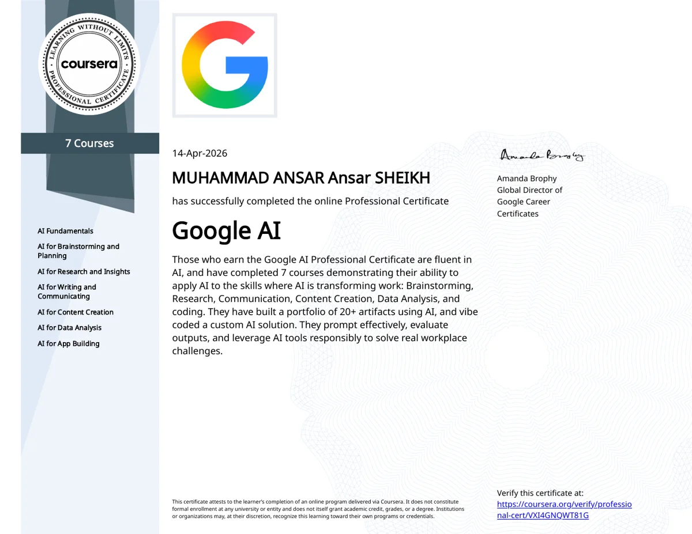
Google · Coursera · 14 Apr 2026
7 courses: AI fundamentals, research, writing, content creation, data analysis and app building.
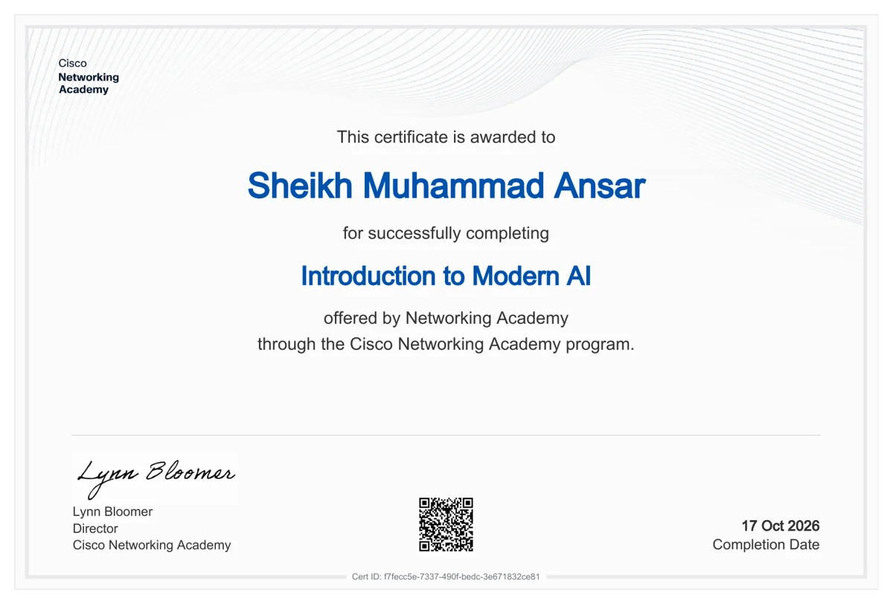
Cisco Networking Academy · 17 Oct 2026
Cert ID f7fecc5e-7337-490f-bedc-3e671832ce81
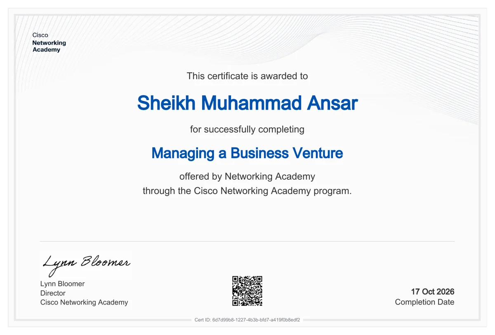
Cisco Networking Academy · 17 Oct 2026
Cert ID 6d7d99b8-1227-4b3b-bfd7-a419f0b8edf2
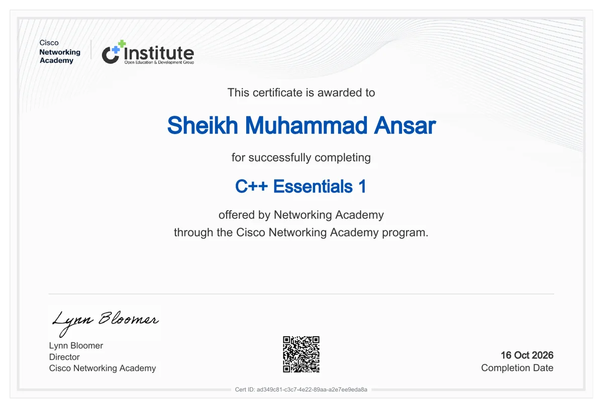
Cisco Networking Academy with C++ Institute · 16 Oct 2026
Cert ID ad349c81-c3c7-4e22-89aa-a2e7ee9eda8a
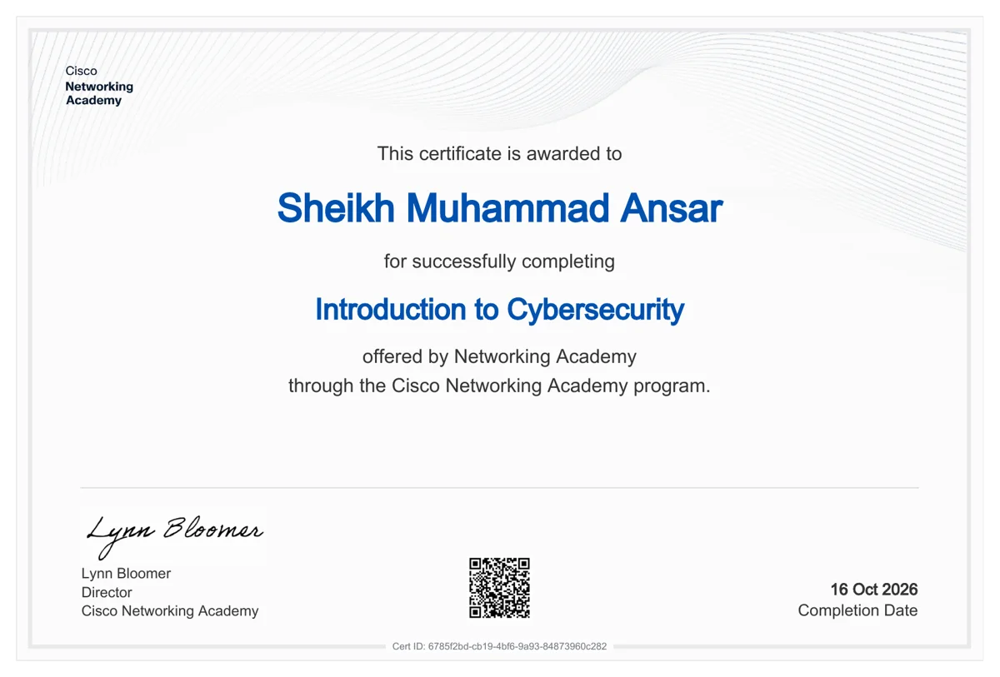
Cisco Networking Academy · 16 Oct 2026
Cert ID 6785f2bd-cb19-4bf6-9a93-84873960c282
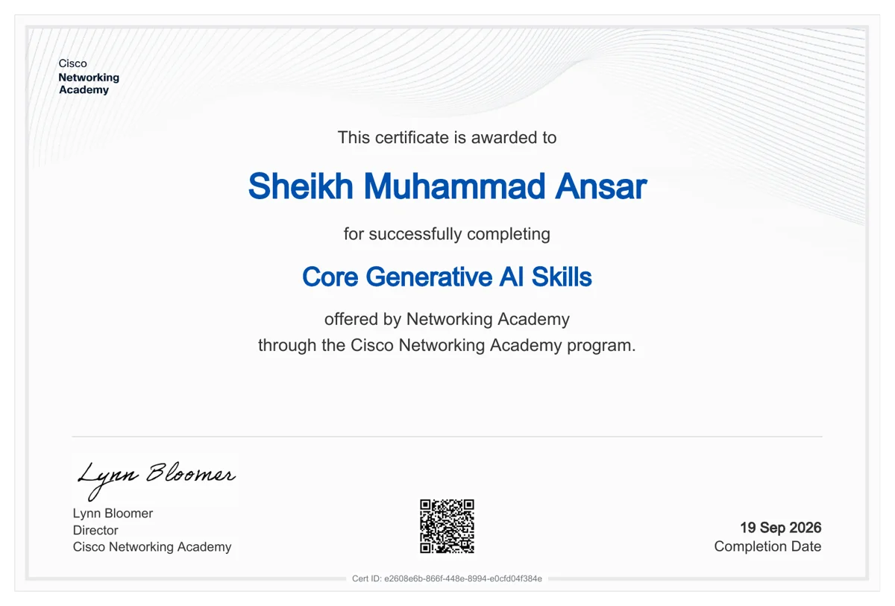
Cisco Networking Academy · 19 Sep 2026
Cert ID e2608e6b-866f-448e-8994-e0cfd04f384e